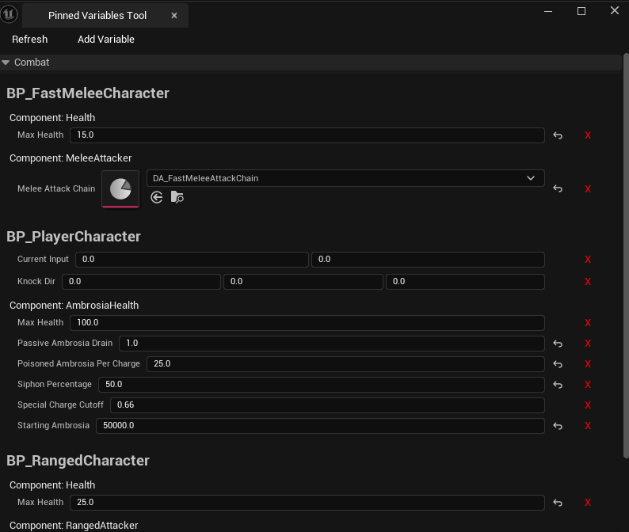
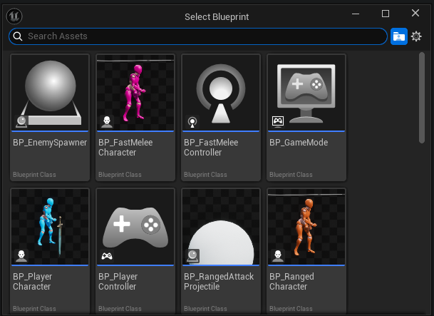
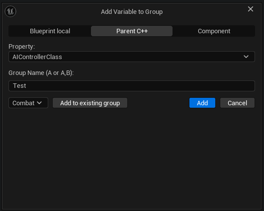

PinVar — Pinned Variables Tool
PinVar started as a quality-of-life tool while I was balancing a combat system. Jumping between multiple Blueprints to change one number at a time got old fast, so I built a panel that pulls the variables I care about into tidy, collapsible groups.
How to Use
Open the Tool
Navigate to Windows → Pinned Variables Tool. A new tab will appear where your grouped variables will be listed.
Add a Variable
Click the Add Variable button, then select the Blueprint containing the variable you want to add.
Select the type of variable to add:
- Local Blueprint variable
- Variable in the C++ parent class
- Variable in an attached component
Select the variable you want to add and either give it a group name and press Add, or select a preexisting group name and click Add to existing group.
Edit the Variables
In the tool’s main view, open a group and edit the variables directly from the panel.